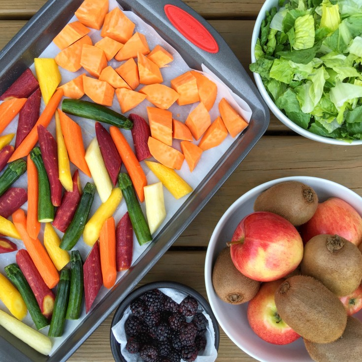
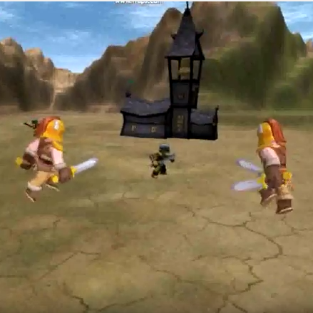
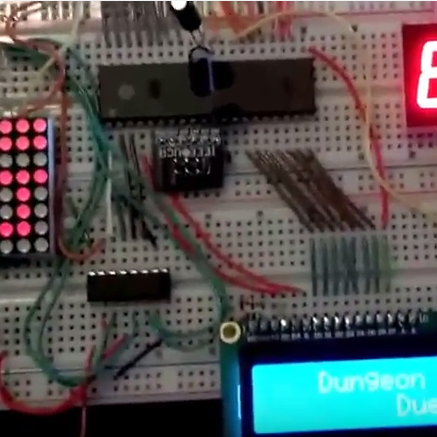

Projects

Lazy Chef Meal Prep
February 2016 - Current
Lazy Chef is a program that is in the works at the moment. The objective is to create a program that essentially takes a list of recipes and cross references them with the nutritional data from USDA's public database. From there, it will generates a meal plan for the week. Ideally this would be an app on phones one day. This would be great for anyone trying to eat healthier, lose weight, gain muscle, etc. All one would need is a nutrient goal for the week and this program will do the rest for you. There could be vegetarian options as well as budgetting options.
At the moment I am working out the logic to parse the nutrient information and store it all into a map.
See it on github

Orc Wars
Spring 2014
Orc Wars is a RTS game developed in Unity using only C# scripts. This was my senior design project, and on day 1 we were split into groups of 4 at random. We were given 10 weeks to brainstorm an idea, learn C# as well as Unity, and finally complete a game. My teammates were Keshav Dasu, Nick Barrett, and Andrew Nguyen.
Orc Wars has a medieval and fantasy theme. Essentially, a bunch of knights come and exile a group of monsters from their homeland in the mountains out past the desert. It is now your job to help the monsters get their land back. You have a squad of monsters and you must command them to attack the enemy, defend your structures, and ultimately complete the objectives. The enemy is computer controlled and aims to destroy your troops or your buildings. You can control 4 different monsters and possess 3 different buildings. The 4 different troops range in damage, speed, life, and cost. The buildings all serve different purposes. The castles are your ultimate goal. If your enemy destroys your castle, then you lose, but if you destroy the enemies castle, you win. Do not let your castle die. The gold mine is your primary source of income. Let that be destroyed and you can no longer afford the hiring of new troops. The last building is the barracks, the mains source of troops. If this is destroyed, you cannot hire anymore troops.
See it on github | Watch video on youtube

Seaweed
Spring 2014
In my Video Game design course, one of our projects was to make and animate an interactable style="width:50%; table-layout:fixed" seaweed. This was entirely in C++ using OpenGL. I had first created a mesh made of points connected by edges that acted as springs. These springs all had different forces acting on them, including the natual spring force as well as the bouyancy of the water. Lastly, we created fish that would swim through the water and act as additional forces on the seaweed.
See it on github

Polygon Render
Fall 2013
A truly challenging C++ project to complete was a polygon rendering program for Computer Graphics. Given a text file with 3D points and triangular faces conecting those points, our goal was to subdivide those triangular face and overall create a smoother face. I did this by creating structures of vertices, edges, and faces, and during the subdivision process they would automatically update themselves in a generic fashion for any face given. Every vertex would now have a midpoint between each of its neighbors, in which case, the new midpoints would now be neighbors for a future subdivision. Each edge would split into 2 edges. Each face would split into 4 faces (by taking a triangle and connecting the midpoints of each side to each other).
The next part of this was to render the image. Now that we have our subdivided polygon, we had to place a light source into our image space and color the polygon according to amount of light hitting each pixel of the polygon. I accomplished this by ray tracing the pixel and calculating the ambient, diffuse, and specular lighting for that pixel.
See it on github

Dungeon Duels
Winter 2013
In my Embedded Systems class, we were given a bread board, an ATMega32 chip, and a box full of leds, resistors, transistors, buttons, switches, a LCD display, and a 7-SEG display. Every week, in lab, we learned to use new components and how to make simple things like traffic lights and small games. However we spent half the class working on a final project that was to be built on the bread board and take no less than 20 hours. I made a game called Dungeon Duels, consisting of a LCD display, a 7-SEG display, 2 shift registers, an 8x8 LED matrix, a keypad, a button and a switch. It was a great project, im very happy with the outcome.
See it on github | Watch video on youtube

Dijksrta's Algorithm & Word Ladder
Summer 2012
In my software construction course (CS100), a particularily interesting program we had to write was given a dictionary of roughly 9,000 five-letter words, we would use dijkstra's algorithm to find the shortest path from one word to another by changing only one letter at a time.
See it on github

Sorting Algorithms
Spring 2012
In my Introduction to Data Structures and Algorithms class (CS14), we studied sorting algorithms, the running time and the implementation. As an assignment, we were asked to write code for mergesort, heapsort, and quicksort to numerically sort a list of 5,000,000 numbers.
See it on github | Watch video on youtube

Multiplier
Winter 2012
A project assigned in another class of mine (CS61, Machine Organization and Assembly Language Programming) consisted of writing a simple multiplier in assembly (specifically the LC-3). The program asks for 2 numbers, in the range of [-32768, 32767], and converts them to binary numbers. It then multiplies the two numbers and checks for errors in cases where there might be an overflow or underflow.
See it on github

Frogger
Fall 2010
The final assignment in my first programming class (CS10, C++ Programming I) at UCR, was similar to the game known as Frogger. We used a graphics package called Instinct and used squares and rectangles to represent the vehicles crossing the street. To play the game, you use the arrow keys to move and your goal is simply to get to the other side of the street without being hit by a car.
See it on github

Go Fish & War
Fall 2009 - Spring 2010
My high school required every student to participate in a large project in which we had to spend at least 40 hours working on. This project could be anything and I chose to develop two card games, Go Fish and War. However, since I was completely new to programming, I had to learn C++ from scratch and with the help of my consultant/step father, Rajesh Pankaj, I picked it up fairly quickly. I created many simple projects like a calculator, factorial, guess my number, etc. all to get me used to the programming basics like declarations, strings, arrays, loops, conditional branches, functions, and structures. I then began working on these two games with the Borland C++ IDE, where all my learnings had come together into one large project.